Photos About Ganesh Chaturthi
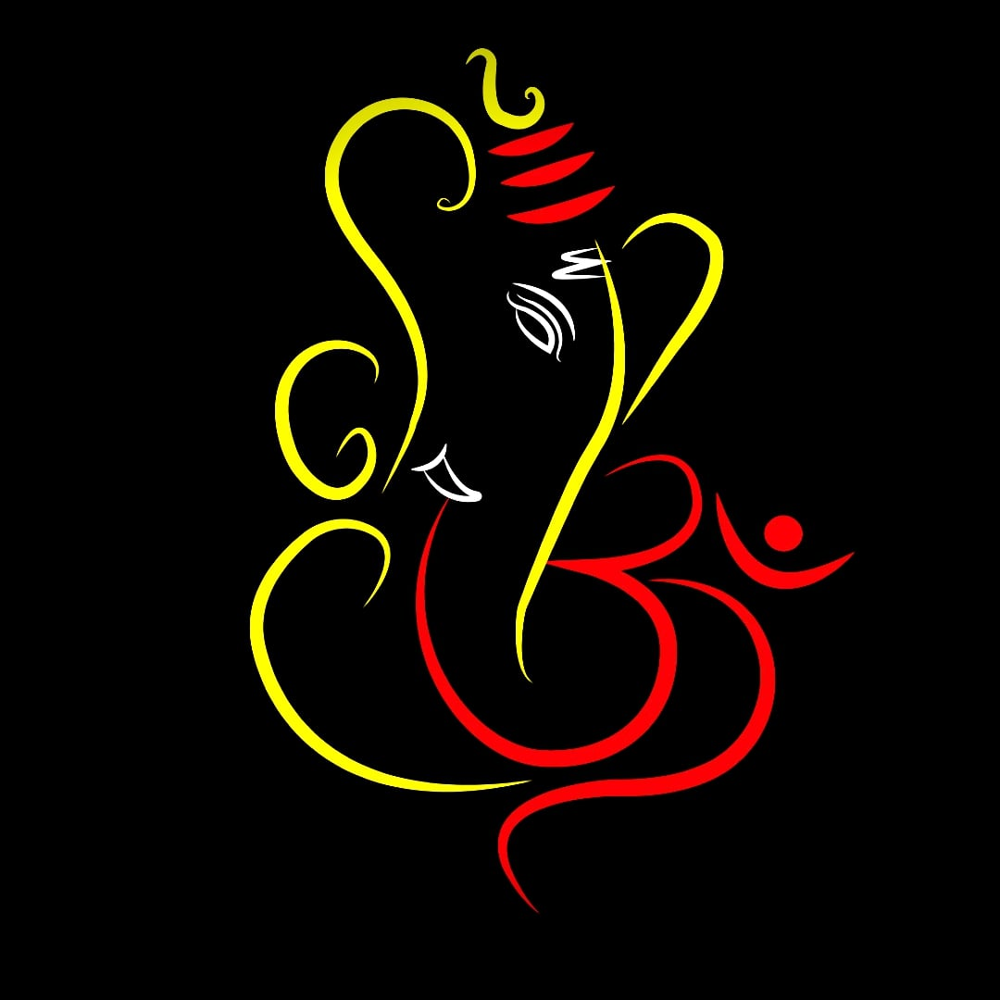 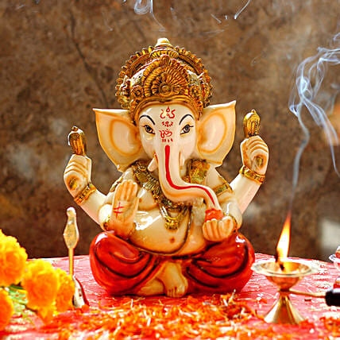 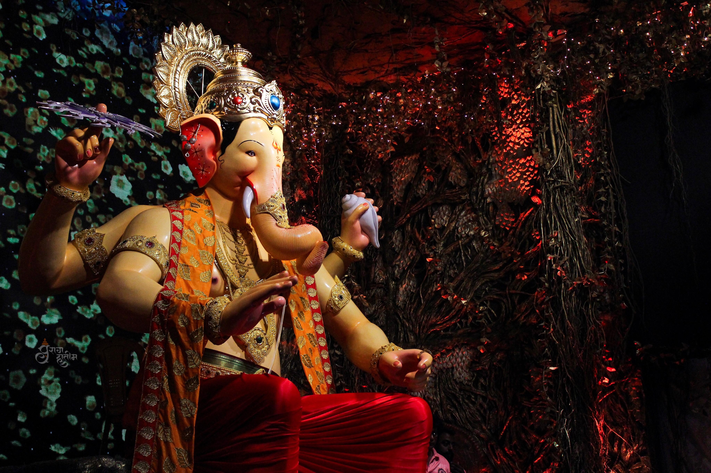 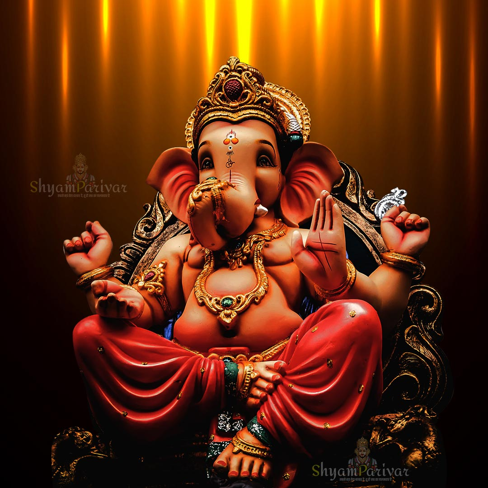Information About Ganesh Chaturthi
Though not alluding to the classical form of Ganapati, the earliest mention of Ganapati is found in the Rigveda. It appears twice in the Rigveda, once in shloka 2.23.1, as well as in shloka 10.112.9.[20][21][22] Both of these shlokas imply a role of Ganapati as "the seer among the seers, abounding beyond measure in food presiding among the elders and being the lord of an invocation", while the shloka in mandala 10 states that without Ganapati "nothing nearby or afar is performed without you", according to Michael.[20][23] However, it is uncertain that the Vedic term Ganapati which literally means "guardian of the multitudes", referred specifically to later era Ganesh, nor do the Vedic texts mention Ganesh Chaturthi. appears in post-Vedic texts such as the Grhya Sutras and thereafter ancient Sanskrit texts such as the Vajasaneyi Samhita, the Yajnavalkya Smriti and the Mahabharata mention Ganapati as Ganesvaras and Vinayak. Ganesh appears in the medieval Puranas in the form of "god of success, obstacle remover". The Skanda Purana, Narada Purana and the Brahma Vaivarta Purana, in particular, profusely praise him. [25] Beyond textual interpretations, archaeological and epigraphical evidence suggest Ganesh had become popular, was revered before the 8th century CE and numerous images of him are traceable to the 7th century or earlier. Ganesh idol in Khairatabad, Hyderabad, India For example, carvings at Hindu, Buddhist, and Jain temples such as at the Ellora Caves, dated between the 5th and 8th-century show Ganesh reverentially seated with major Hindu goddess (Shakti). Festival Although it is unknown when (or how) Ganesh Chaturthi was first observed, the festival has been publicly celebrated in Pune since the era of King Shivaji (1630-1680, founder of the Maratha Empire). The Peshwa in the 18th century were devotees of Ganesh and started as a public Ganesh festival in their capital city of Pune during the month of Bhadrapad.After the start of the British Raj, the Ganesh festival lost state patronage and became a private family celebration in Maharashtra until its revival by Indian freedom fighter and social reformer Lokmanya Tilak. I followed with the greatest curiosity crowds who carried in procession an infinite number of idols of the God Ganesh. Each little quarter of the town, each family with its adherents, each little street corner I may almost say, organizes a procession of its own, and the poorest may be seen carrying on a simple plank their little idol or of paper mâché... A crowd, more or less numerous, accompanies the idol, clapping hands and raises cries of joy, while a little orchestra generally precedes the idol. - Angelo de Gubernatis, Bombay Gazette (1886) According to others such as Kaur, the festival became a public event later, in 1892 when Bhausaheb Laxman Javale (also known as Bhau Rangari), installed the first sarvajanik (public) Ganesh idol in Pune.[31] In 1893, the Indian freedom fighter Lokmanya Tilak praised the celebration of Sarvajanik Ganesh Utsav in his newspaper, Kesari, and dedicated his efforts to launch the annual domestic festival into a large, well-organised public event. Tilak recognised Ganesh's appeal as "the god for everybody",and according to Robert Brown, he chose Ganesh as the god that bridged "the gap between Brahmins and non-Brahmins", thereby building a grassroots unity across them to oppose British colonial rule.
Gallery
 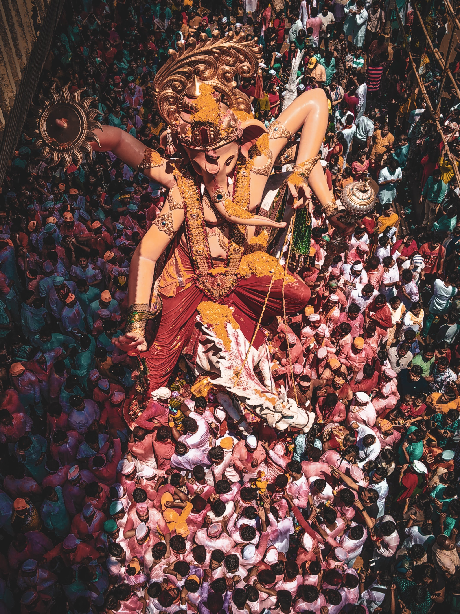
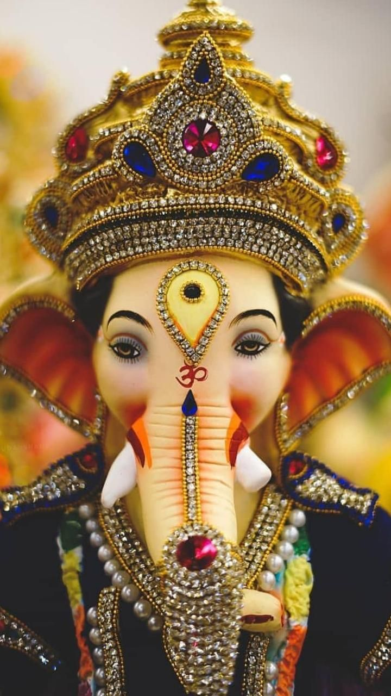
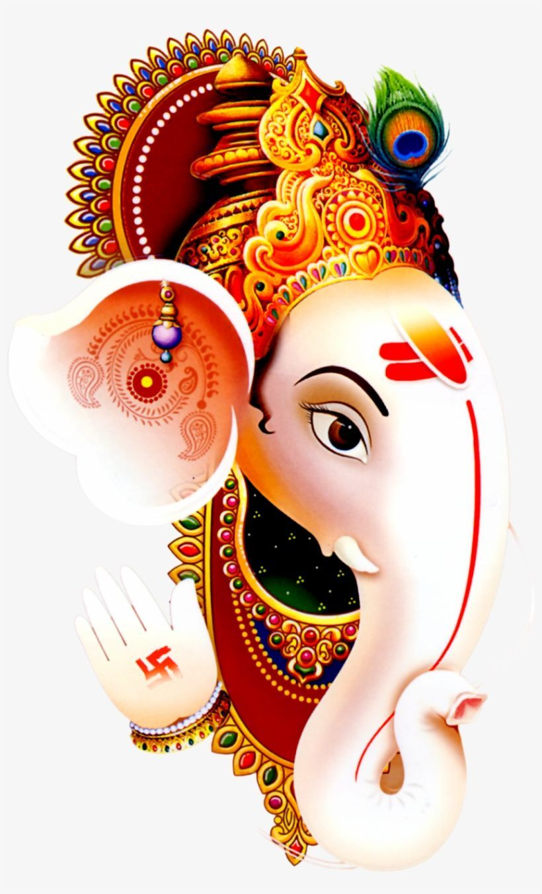
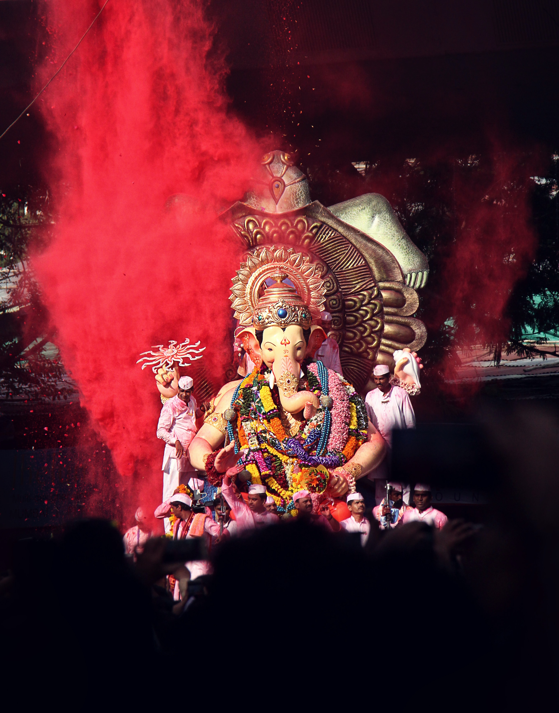
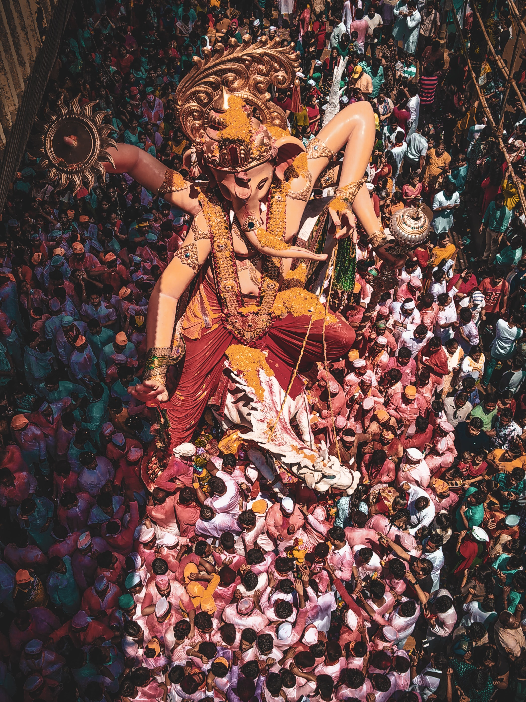
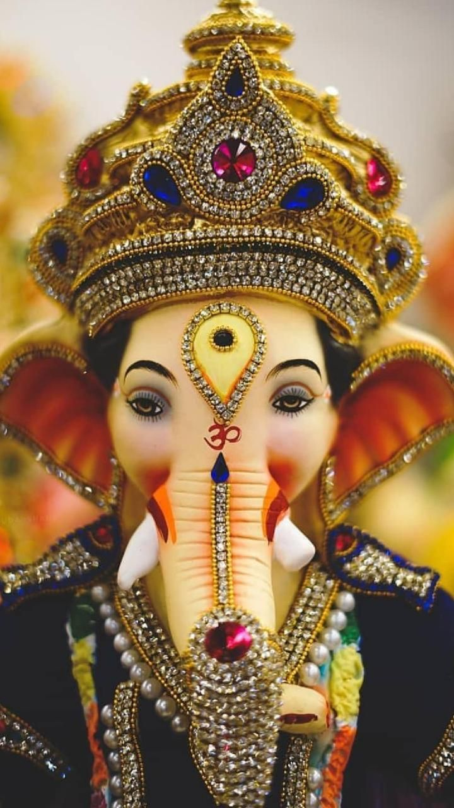
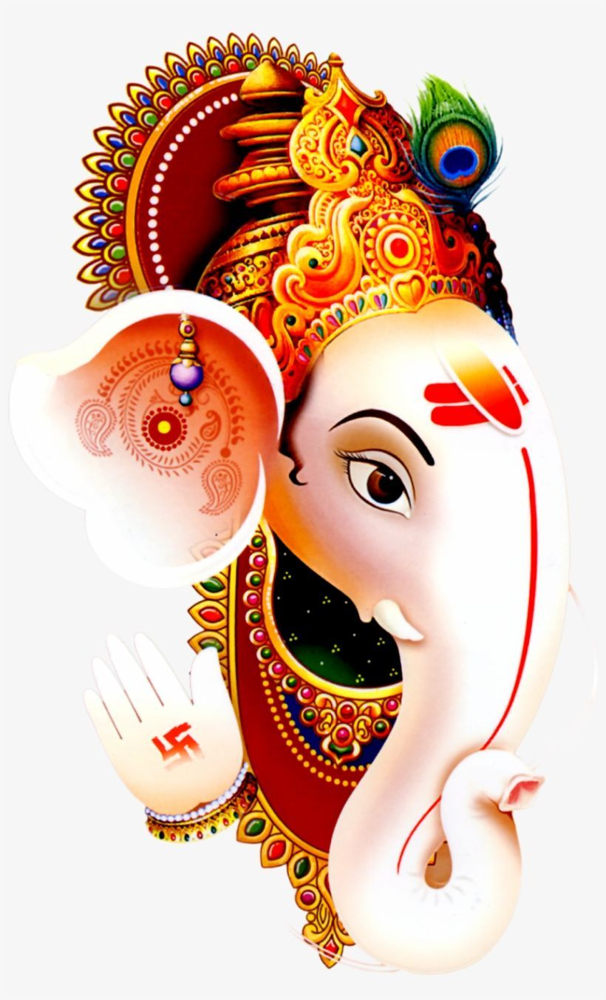
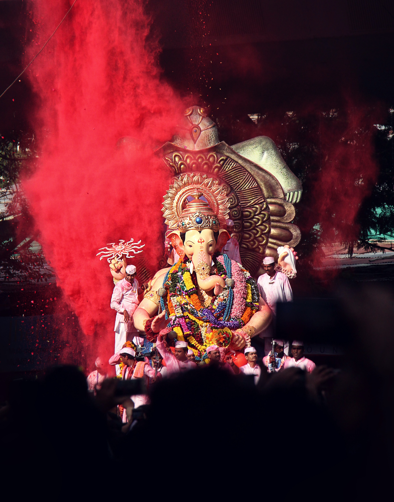